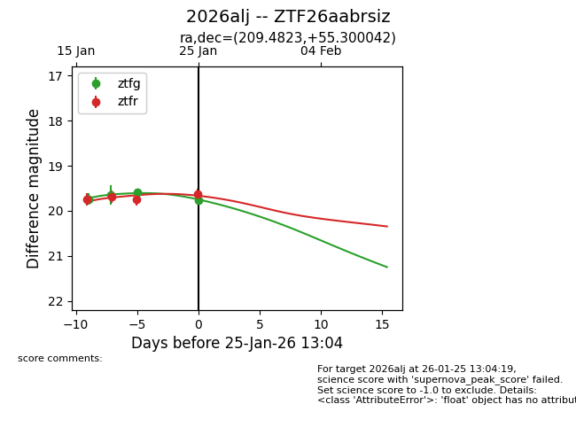
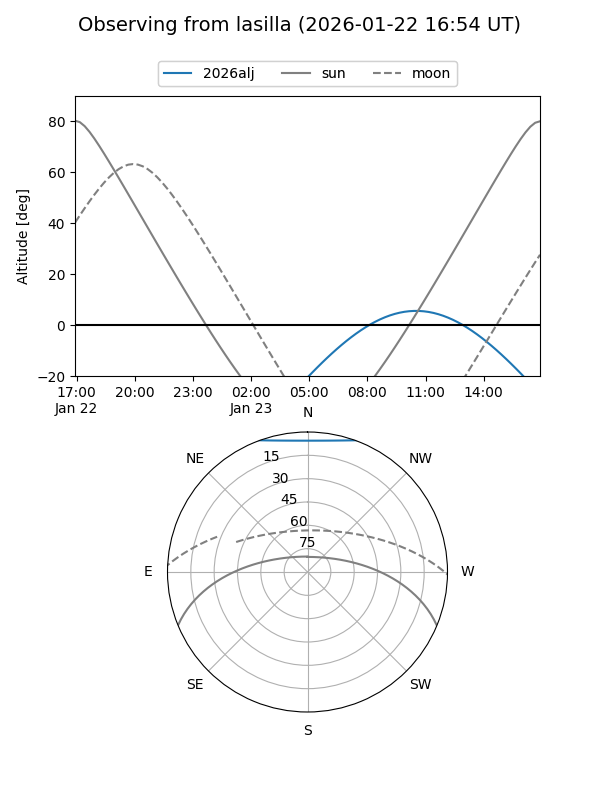
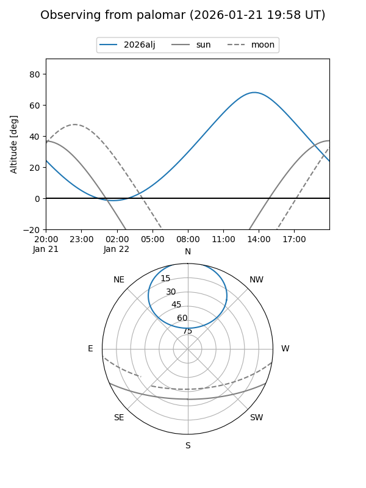
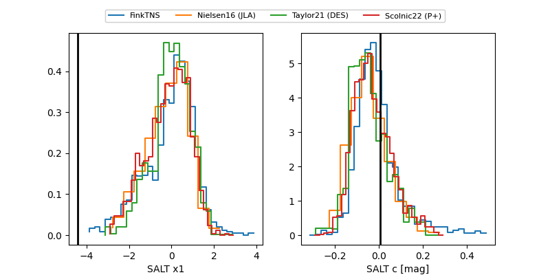

2026alj
Target 2026alj at 2026-01-25 11:51
Aliases and brokers:
FINK: link
Lasair: link
ALeRCE: link
TNS: link
YSE: link
alt names
ZTF26aabrsiz (ztf,fink_ztf)
2026alj (tns,yse)
Coordinates:
equatorial (ra, dec) = 209.4823,+55.30004
equatorial (HMS+DMS) = 13:57:55.75,+55:18:00.15
galactic (l, b) = (104.2981,+59.35730)
Flags:
Photometry:
last ztfg=19.59, ztfr=19.63
3 ztfg, 4 ztfr detections
Lightcurve

Visibility


Additional plots
